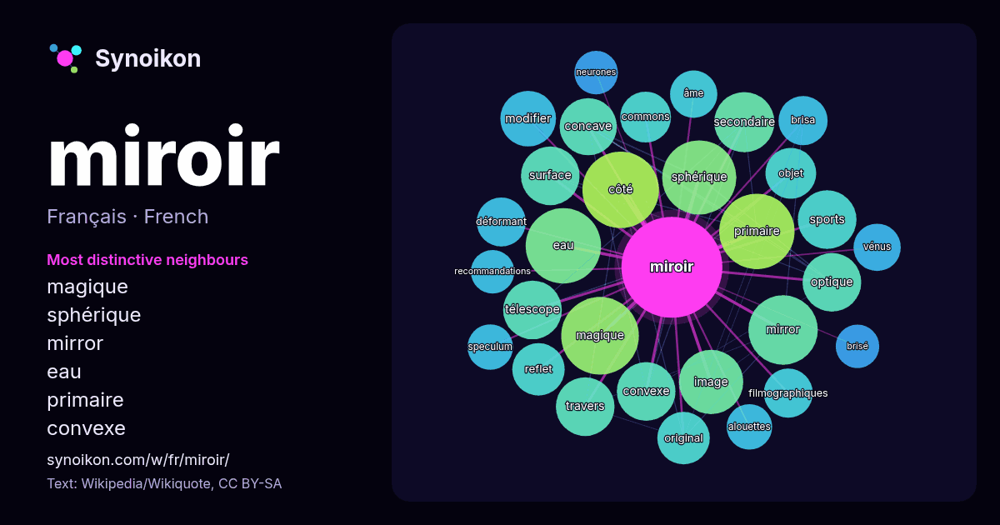

Français · liste des mots du jour
miroir
“mirror” · Les mots trouvés autour de lui dans 1384 occurrences issues de Wikipédia, Wikiquote.

Voisins les plus spécifiques
- magique 34×
- sphérique 32×
- mirror 29×
- eau 28×
- primaire 26×
- convexe 20×
- concave 20×
- optique 19×
- télescope 18×
- secondaire 18×
- image 18×
- modifier 17×
- sports 16×
- reflet 16×
- commons 16×
- filmographiques 15×
- déformant 15×
- brisa 15×
- original 14×
- côté 14×
× = combien de fois plus souvent que dans le texte général de Wikipédia.
Voisins les plus fréquents
- magique 35
- côté 34
- femme 34
- eau 33
- primaire 33
- sphérique 32
- grand 28
- mirror 28
- image 24
- plan 21
- secondaire 21
- convexe 20
- film 20
- optique 20
- sports 20
- surface 20
- télescope 20
- travers 20
- concave 19
- modifier 18
En contexte
- Pour les articles homonymes, voir Miroir (homonymie). Un miroir est un objet possédant une surface suffisamment polie pour qu'une image s'y forme par Wikipedia snippets · Miroir
- Le stade du miroir est un stade dans le développement psychologique où apercevoir son image dans le miroir amène l'enfant à prendre conscience de son corps Wikipedia snippets · Stade du miroir
- Pour les articles homonymes, voir Miroir (homonymie). Un miroir en optique est une surface réfléchissante. Les miroirs, par opposition aux éléments dits Wikipedia snippets · Miroir (optique)
- déplacer d'un endroit à l'autre à travers les miroirs et 21 arches qui constituent le monde d'Ophélie. La Passe-miroir aborde différentes thématiques comme le Wikipedia snippets · La Passe-miroir
- sujet plus développé dans : Miroir (optique) et Miroir sphérique. Un miroir convexe, ou miroir de sorcière, est un miroir à surface courbe, éventuellement Wikipedia snippets · Miroir convexe
- un miroir est une copie exacte d'un ensemble de données. Sur le Web, un site miroir est une copie exacte d'un autre site web. Les sites miroirs sont Wikipedia snippets · Site miroir
- Pour les articles homonymes, voir Le Miroir magique (homonymie). Le miroir magique est un miroir appartenant à l'univers du merveilleux. Il est tour à Wikipedia snippets · Miroir magique
- l'autre côté du miroir (titre original : Through the Looking-Glass, and What Alice Found There ; littéralement : « De l'autre côté du miroir, et ce qu'Alice Wikipedia snippets · De l'autre côté du miroir
Autres mots
- art
- automne
- carte
- chanson
- chat
- chemin
- cheval
- chien
- climat
- cloche
- cœur
- dieu
- désert
- eau
- famille
- forêt
- histoire
- hiver
- horloge
- jardin
- langue
- miel
- monnaie
- montagne
- mort
- mère
- nature
- nourriture
- ombre
- pain
- pluie
- pont
- pouvoir
- printemps
- santé
- science
- sel
- silence
- temps
- tempête
- thé
- train
- travail
- trésor
- vie
- ville
- vérité
- étoile
- île
Précalculé le 2026-10-09 avec les paramètres par défaut (±5 mots, corpus moyen). La carte interactive peut l’actualiser avec des données en direct.
Interface traduite automatiquement ; corrections bienvenues.